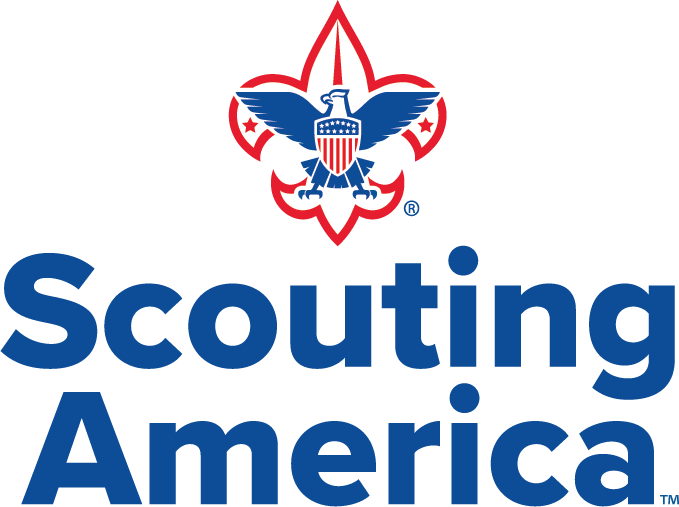

ROTTERDAM SCOUTS FOOD DRIVE
Thank you,
Rotterdam!
2,059
items to feed our neighbors
1,637
homes got a flier
25
pickup routes
Troop 3054 · Pack 3054 · Girl Scout Troop 5152
troop3054.org/food-drive
IT ALL STAYS IN OUR COMMUNITY
